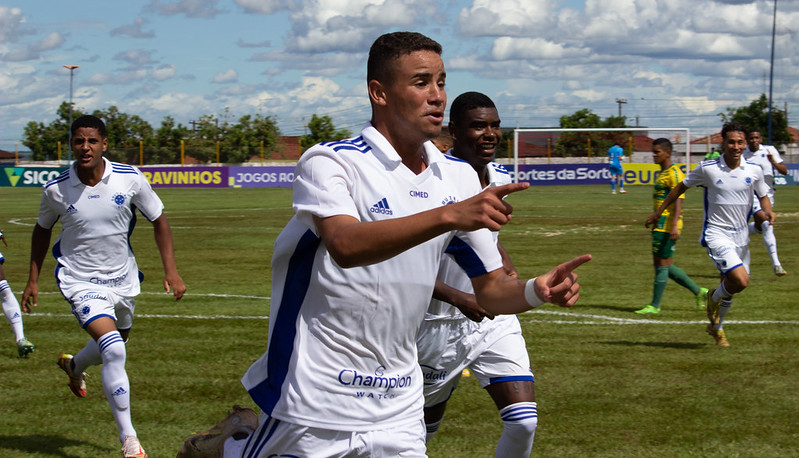

Crias da toca ganham do Cuiabá por 2x1 e avançam para as oitavas de finais da Copinha. Próximo adversário será definido nesta tarde entre Corinthias e Sport.
Crias da toca ganham do Cuiabá por 2x1 e avançam para as oitavas de finais da Copinha. Próximo adversário será definido nesta tarde entre Corinthias e Sport.
Ex-Bahia é anunciado hoje na Toca Da Raposa II. Matheus Davó chega ao Cruziero com 60% dos direitos econômicos comprados do Corinthias.
Willian segue no processo de recuperação. Com volta aos treinos em campo, jogador faz preparação com boas expectativas de retorno aos treinamentos com o grupo.